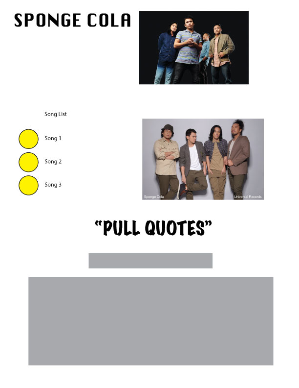
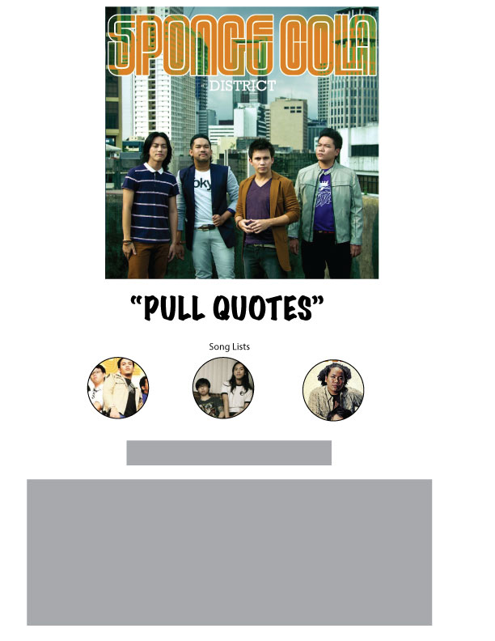
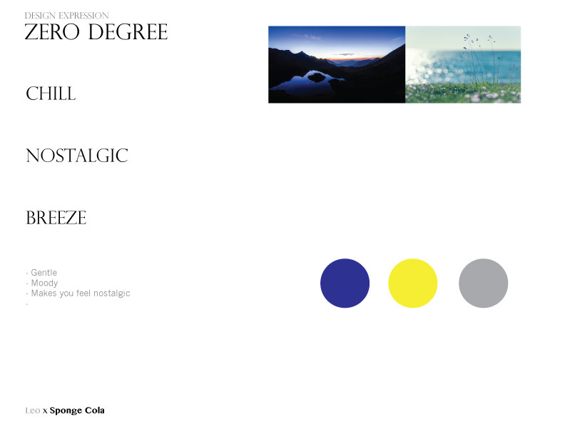

In my essay, I express a very emotional feeling towards my artist. I wanted to express chill environment on my website. The artist I choosed composed many slow and chill songs. I want to show that on my website in my essay. Although I feel I let pictures over take the hierachy as I upload numbers of pictures. I feel like I failed to show what I want to show for my artist on my website. I also feel that there is a disconnect in my essay and to my wireframe.
 For my moodboard, I decided to show a more relax website for my artist. Many of the music my artist composed is very chill and relax. In my next project, I want to elaborate more and stick to the mood board as possible. Learn CSS so I can take control what I want to show on my next project. I believe a website is fun to read when it is very well made and easy to navigate and understand.
At the very beginning it seem very easy to apply the code(html and css) on the website, but as I get far ahead, many things becoming complicated. There are things you want to happen this way but I can't do because the lack of experience or I don't know how to do it. What's most frustrating to me was trying to apply the code. There are some codes that are difficult to apply on your website.
Click Here to go to my website.For future, I want to look my website clean and easy to follow. I want to add things that would make audience stay in the beginning of my website. I don't like keeping the same from the previous, I like to try different and experience that I have level up from before.